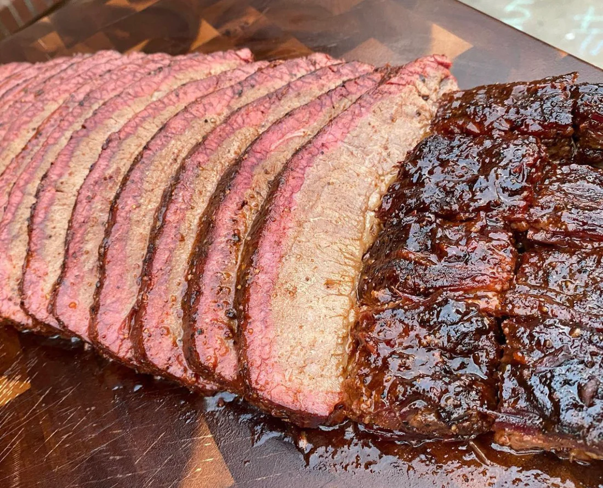

Brisket
What meat lover establishment would we be without brisket?
Smoked & seasoned to perfection, each mouth watering bite will having you feel extra patriotic.
Char Siu Pork
Char Siu - Chinese BBQ Pork - is a juicy sweet pork dish with an iconic red color that many East Asians are familar with. Originating from Canton, now known as Guangzhou, it's a classic dish originally roasting meat on sticks like a kebab.
With our house blend of sauces, we are confident you'll never want for another version.
Bulgolgi

Bulgolgi is a simple korean meat dish comprised of thinly sliced ribeye or sirlion marinating in a BBQ sauce.
Another unique house blend makes our Bulgolgi a cut above.